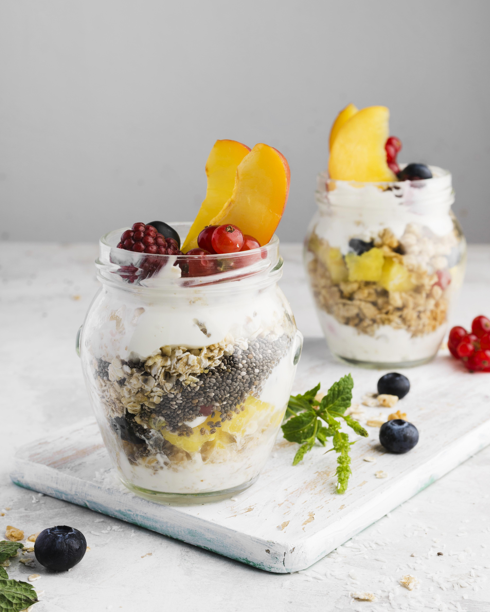

Amasse as bananas em uma tigela até obter um purê.
Em outra tigela, combine a aveia, a farinha de amêndoa, o fermento, a canela e o sal.
Adicione o purê de banana e o óleo de coco aos ingredientes secos e misture até que a massa esteja
homogênea.
Distribua a massa em forminhas para muffins e leve ao forno pré-aquecido a 180°C por cerca de 20-25
minutos ou até que um palito saia limpo ao ser inserido no centro dos muffins.
3. Pudim de Chia com Frutas

Ingredientes
1/4 de xícara de sementes de chia
1 xícara de leite de amêndoas (ou outro leite vegetal)
1 colher de chá de extrato de baunilha
Frutas frescas para servir (morango, kiwi, manga, etc.)